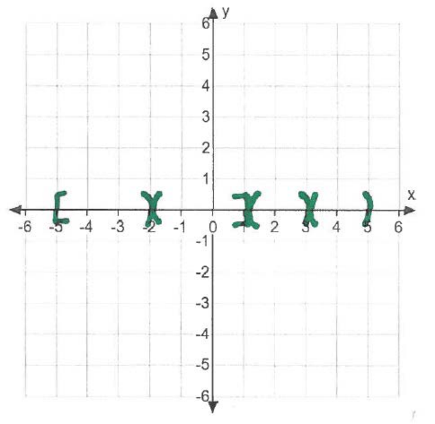
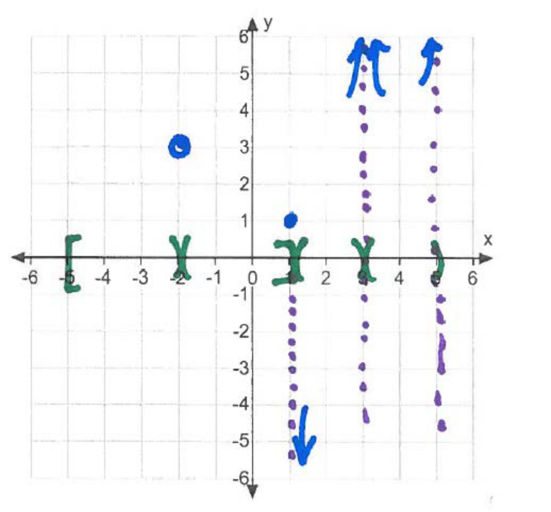
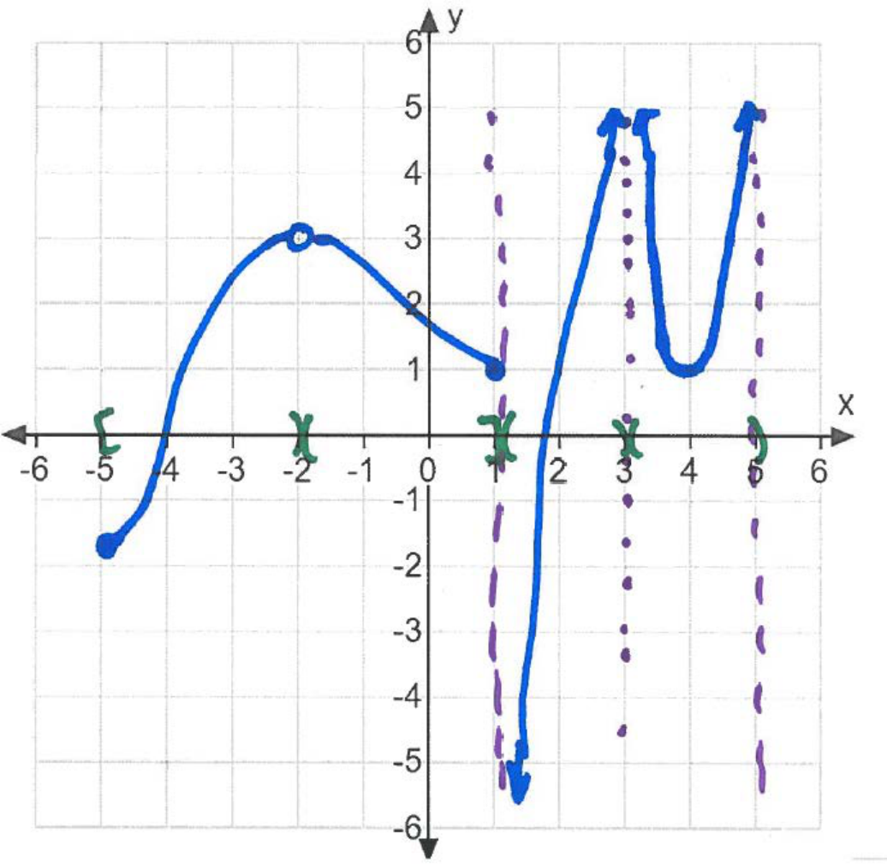

\begin{align*} &\textrm {Domain:} [-5,-2) \cup (-2,3) \cup (3,5) & \lim _{x \to -2} g(x) = 3\\ & g(1)=1 & \lim _{x \to 1^+} g(x) = -\infty \\ & \lim _{x \to 3} g(x) = \infty & \lim _{x \to 5^-} g(x) = \infty \\ & \lim _{x \to 1^-} g(x) = 1 & g(-5)=-1.8 \end{align*}
First we will draw our domain on the x-axis using green. We will use a bracket when
a point is in the domain and curved parenthesis when it is not.

Next, we draw and open circle at \((-2,3)\) because we know \(\lim _{x \to -2} g(x) = 3\). We also draw a closed circle at (1,1) and (-5,-1.8) because we know \(g(1)=1\) and \(g(-5)=-1.8\). Finally we draw in our vertical asymptotes in purple as indicated by the infinite limits at \(x=1, x=3, x=5\). We draw the tails of the asmyptotes in blue to indicate whether the function \(g\) approaches \( -\infty \) or \(\infty \).

Finally, we connect our graph together.
